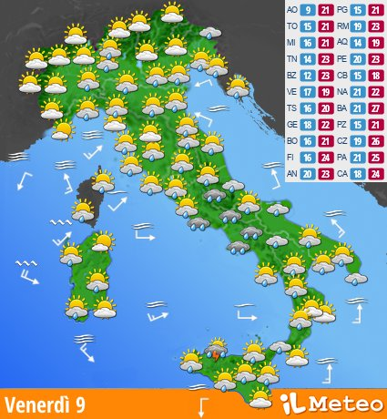
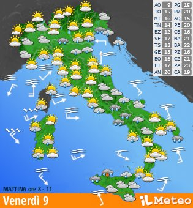
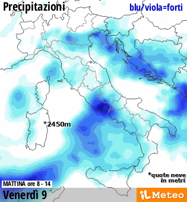
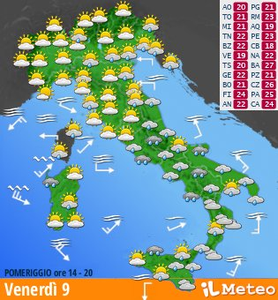
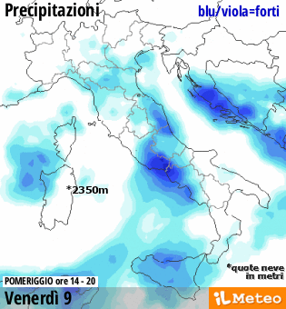
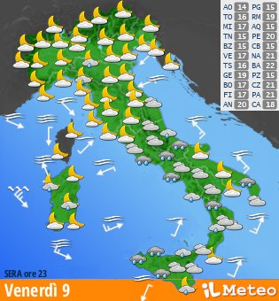
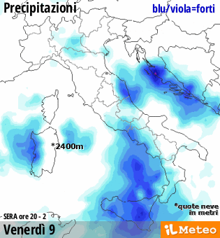
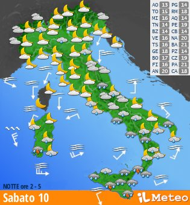
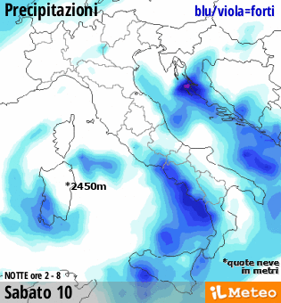

METEO DOMANI - Venerdì 9 Ottobre
Aggiornamento del 08/10/26 17.39 - Prossimo: 08/10/26 20.25
METEO DOMANI - Venerdì 9 Ottobre

APPROFONDIMENTO
Una perturbazione interessa il Paese. La giornata sarà contrassegnata da condizioni di tempo instabile o molto instabile al Nordest e al Sud, specie sul lato tirrenico. Attesi rovesci di pioggia localmente alternati a schiarite o pause asciutte. Non mancheranno dei temporali, specie al Sud. Piovaschi e schiarite soleggiate sul resto delle regioni. Venti moderati, mari mossi.
Aggiornamento del 08/10/26 17.39 - Prossimo: 08/10/26 20.25
Meteo domani - NORD
La pressione è bassa sulle nostre regioni. La giornata sarà contraddistinta da un cielo molto nuvoloso o localmente coperto. Sono attese piogge che interesseranno maggiormente il Nordest, saranno alternate a schiarite in Lombardia, maggiori spazi soleggiati in Piemonte e sul Trentino Alto Adige. Venti meridionali, mar Ligure molto mosso. Temperature stazionarie.
Temperature
Valori massimi attesi tra i 19 e i 21°C gradi su tutte le città.
Meteo domani - CENTRO e SARDEGNA
Sulle nostre regioni la pressione si è abbassata per il transito di una perturbazione. La giornata sarà contraddistinta da un tempo spiccatamente instabile, infatti la nuvolosità ben presente potrà provocare delle precipitazioni irregolari su molte regioni, più forti sul Lazio. I venti soffieranno da Libeccio sul Tirreno e da Scirocco sull'Adriatico. I mari risulteranno mossi.
Temperature
Valori massimi compresi tra i 19-20°C di L'Aquila e Campobasso e i 23-24°C di Ancona e Pescara
Meteo domani - SUD e SICILIA
Una perturbazione atlantica interessa le nostre regioni, pertanto la giornata sarà contraddistinta da un cielo spesso coperto o molto nuvoloso. Sono previste delle piogge localmente intense in Campania e distribuite in forma irregolare e generalmente modeste sul resto delle regioni. Entro sera peggiora diffusamente in Sicilia. Venti meridionali, mar Ionio molto mosso, mossi i restanti bacini.
Temperature
Valori massimi attesi tra i 18°C di Potenza e i 25-26°C di Bari e Palermo e Catanzaro
MATTINA - meteo domani, ore 8-11


POMERIGGIO - meteo domani, ore 14-20


SERA - meteo domani, ore 23


NOTTE - meteo dopodomani, ore 2-5

